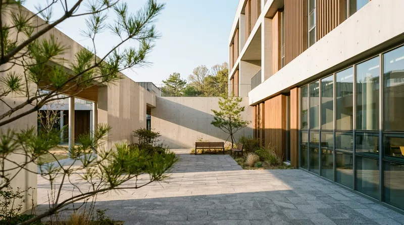

현실의 틈을 열어 마당으로,
사람과 생각의 마주침을 잇다.
덜어낸 화면 위에 필요한 것만 남겼습니다. 지금 바로 쓸 수 있는 0.5초 생활 포털 ‘틈’과 학교 공간을 바꾸는 4단계 순환 이야기를 읽고 판단해 보세요.

틈(온라인)에서 뜰(공간), 터(만남), 숲(기록)으로 이어지는 서전고 학생자치 마스터플랜
틈 — 광고 없는 급식·시간표·공지 포털 가동
새 학기 첫날 바로 쓰는 생활 허브를 열고, 지산실 오픈 D-Day를 띄웁니다.
뜰 — 지산실 폴딩도어 개방 & 그늘집 피크닉존
10년간 닫혀 있던 1층 지산실 안뜰과 김효영 그늘집을 학생 쉼터로 엽니다.
터 — 유랑 세바시 & 3대 무인 자원순환 나눔터
1.2m 빨간 러그 팝업 무대와 패스-잇 서가, A5 이면지 패드, 밸럿 빈을 운영합니다.
숲 — 1원 영수증 공개 & 디지털운영위원회
회의록과 회계를 투명하게 남기고, 기수가 바뀌어도 끊기지 않는 운영 기구를 세웁니다.
선배가 졸업하면 사이트가 방치되지 않나요?
가장 많이 실패하는 지점이라 처음부터 다르게 만들었습니다. 급식·학사일정·학교 공지는 매일 자동으로 모이고, 코드를 몰라도 글과 회계를 올릴 수 있는 관리 화면과 기수제 기술 기구(디지털운영위원회)를 통해 후배들에게 그대로 넘깁니다.
왜 댓글이나 익명 게시판이 없나요?
악플이나 사적 갈등 때문에 학교 커뮤니티가 문을 닫는 경우가 많습니다. ‘틈’은 정확한 학교 정보와 투명한 기록에 집중하고, 공감과 보관만 남겨 누구나 안전하게 쓰도록 했습니다.
유지비나 서버비 부담이 크지 않나요?
별도의 유료 서버가 없는 가벼운 정적 웹 방식이라 유지비가 사실상 0원입니다. 점심시간 직전 전교생이 동시에 켜도 멈추지 않으며, 아낀 예산은 오프라인 쉼터와 순환 사업에 씁니다.
선생님들이 공지를 따로 올려주셔야 하나요?
아니요. 서전고 공식 홈페이지에 올라오는 공지사항과 가정통신문을 자동으로 가져오도록 연결해 두어, 선생님께 새로운 업무 부담을 드리지 않습니다.
약속이 아니라,
이미 움직이는 구조로 남깁니다.
오늘 점심 메뉴와 우리 반 시간표부터 가볍게 먼저 써보세요.